Page-By-Page Source Map
The PDF has twelve scanned pages. Page 1 and the last pages contain many unrelated handwritten doodles in the margins; the rebuilt chapter keeps the ecology content and the relevant printed questions.
Definition of ecology, guiding questions, and adaptations.
Population, habitat, abiotic and biotic features, community, niche, and ecosystem.
Desert, cold/mountain-river habitat, rainforest, coral reef, and energy/nutrient flow.
Producers, consumers, decomposers, predator-prey balance, food chains, food webs, and trophic levels.
Energy pyramid, pyramid of numbers, nutrient cycling, and the carbon cycle.
Deforestation, pollution, sewage, eutrophication, inorganic waste, insecticides, and biomagnification.
Reforestation, afforestation, wildlife conservation, recycling, reducing, reusing, and wrap-up questions.
What Is Ecology?
Organisms continually interact with one another and with their surroundings, or environment. Ecology is the study of these interactions.
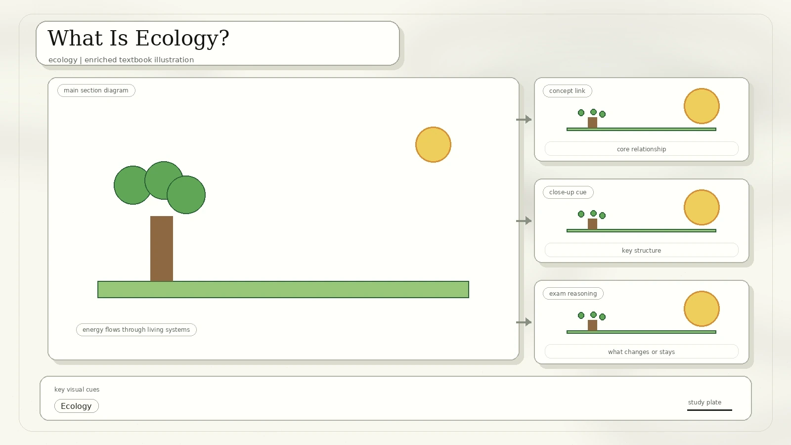
Ecologists identify what animals, plants, fungi, microbes, and other living things occur in a place.
They study feeding, competition, cooperation, predation, disease, and reproduction.
Light, temperature, water, oxygen, soil, shelter, and space shape survival.
Ecologists ask what changes a lake, forest, reef, or field may undergo over time, and how those changes affect organisms.
Adaptation idea from the scan: many organisms have special adaptations that help them survive better in their environment. An adaptation only makes sense in relation to the conditions where the organism lives.
Ecological Organization
Ecology uses levels of organization so that a complicated living system can be studied piece by piece.
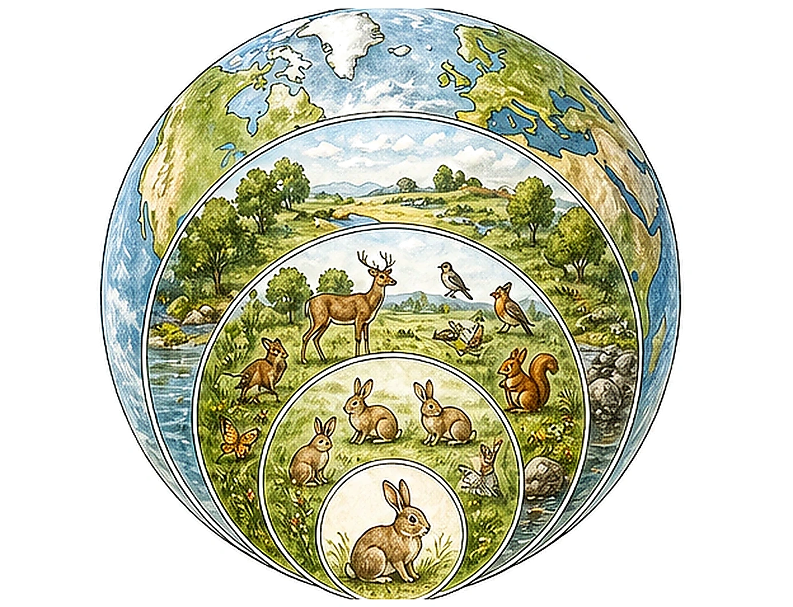
Population
A population is a group of individuals of the same species living in the same place at the same time. Individuals may depend on one another to look out for predators, hunt for food, and remember food and water sources. They also compete for food, water, and shelter.
Population size: when resources are insufficient, individuals may move away or die faster than they reproduce, so population size decreases. When food and water are plentiful, population size usually increases.
Habitat, Abiotic, And Biotic Features
A habitat is the place where an organism lives. Each habitat has its own environment. Organisms with features that help them live under those conditions are said to be adapted to that habitat.
The environment of a habitat is made up of abiotic, non-living features and biotic, living features.
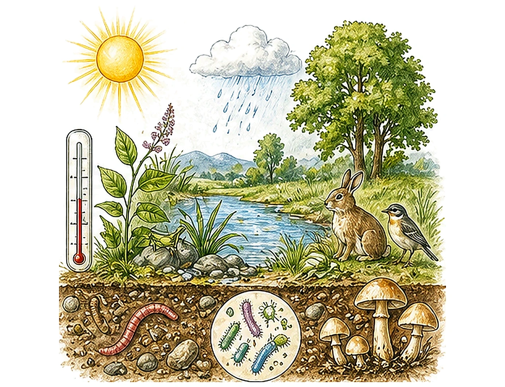
The scan includes viruses under biotic features. In many biology courses, viruses are treated as biological agents rather than cellular organisms, but they can still affect living communities.
Community And Niche
A community is made of different populations of species living and interacting in a habitat. Some depend on one another for survival while others compete for resources. Each population within a community has its own niche.
A niche describes the role a species or population plays in a community. Different populations that try to occupy the same niche compete for resources.
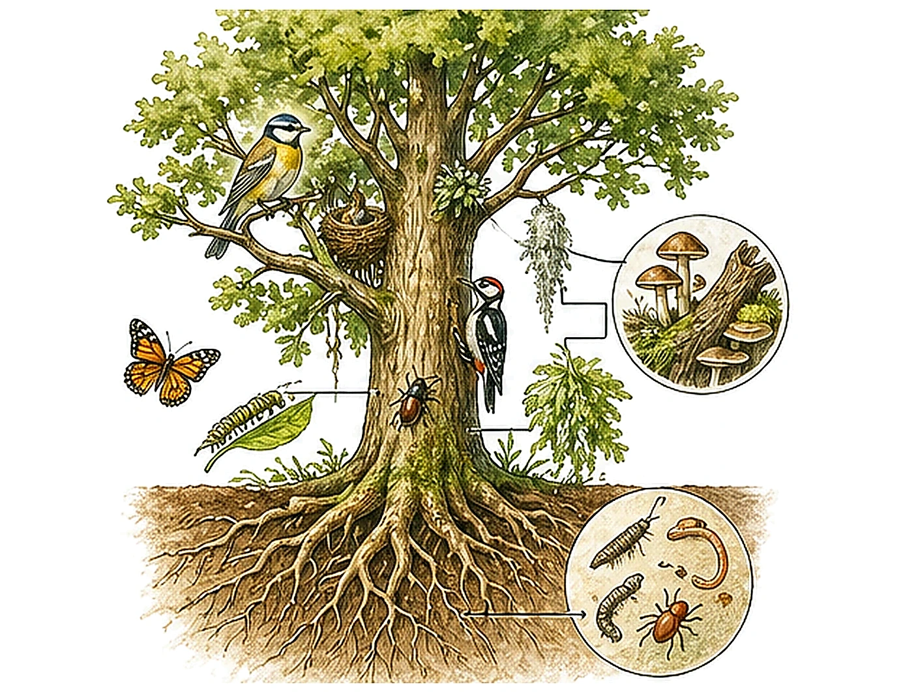
Ecosystem
An ecosystem consists of organisms living together, different populations in a habitat, interacting with each other and their environment. Non-living things such as soil, light, air, and water, as well as living things such as plants and animals, exist together and affect one another directly or indirectly. No living thing exists alone.
Types Of Ecosystems
The scan shows several ecosystem images: a dry desert-like habitat, a cold mountain or river landscape, a rainforest, and a coral reef. The lesson point is that ecosystems can look very different while still having interacting organisms, abiotic conditions, energy flow, and nutrient cycling.
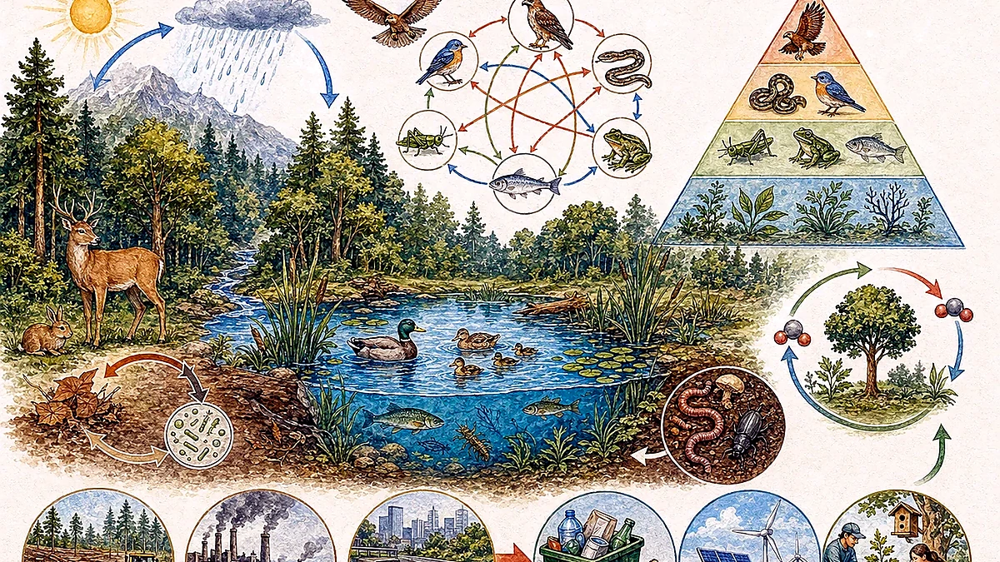
Low water, high temperature swings, and organisms adapted for water conservation.
Temperature, water flow, ice, and short growing seasons shape life.
High rainfall, layered vegetation, intense competition for light, and huge biodiversity.
Warm shallow marine ecosystem with complex food webs and high sensitivity to water conditions.
Energy And Nutrient Flow
An ecosystem uses both energy and inorganic nutrients. Energy enters an ecosystem as light and heat from the Sun. Inorganic nutrients such as carbon, oxygen, nitrogen, and water are obtained from the abiotic environment.
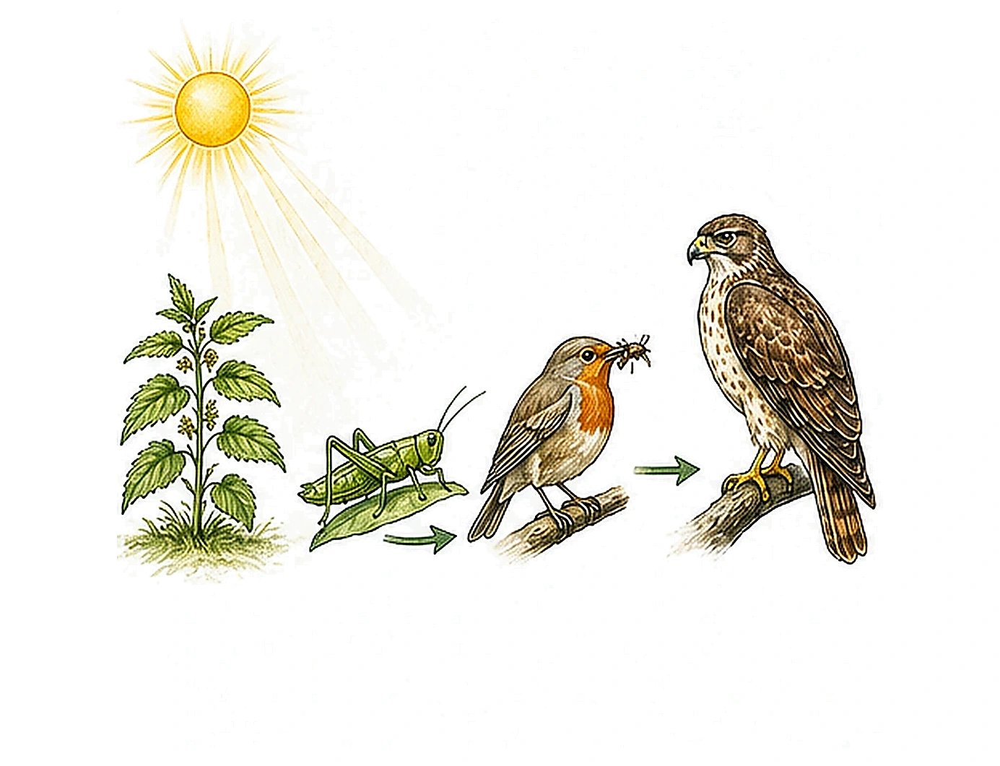
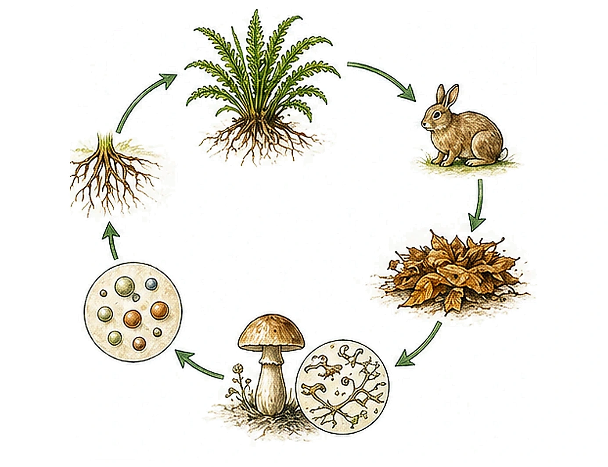
- Light energy is converted into chemical energy and passed from organism to organism.
- Energy is lost as heat to the environment as it flows through the ecosystem.
- The energy lost as heat cannot be recycled, so energy must be constantly supplied.
- In a balanced ecosystem, nutrients are not lost because they are continually recycled.
Players In A Food Chain
The scan divides organisms in feeding relationships into two main groups: producers and consumers. Consumers can be further divided by what they eat.
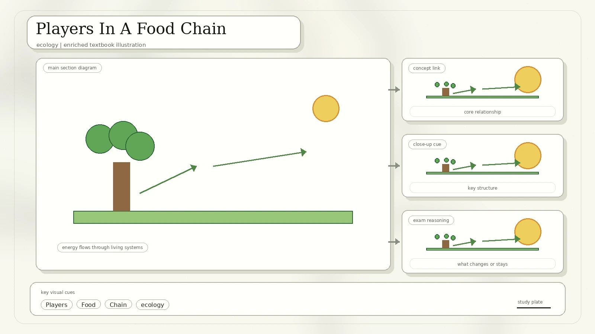
| Role | How it obtains energy | Examples or notes |
|---|---|---|
| Producer | Obtains energy from the Sun and makes food, usually by photosynthesis. | Plants, algae, phytoplankton. |
| Herbivore | Consumer that feeds on plants. | Grasshopper, rabbit. |
| Carnivore | Consumer that feeds on other animals. | Snake, owl, fox. |
| Omnivore | Consumer that feeds on both plants and animals. | Many birds and humans. |
| Scavenger | Feeds on dead matter. | Helps remove carcasses. |
| Detritivore | Eats detritus, dead or decaying organic matter. | Earthworms, woodlice. |
| Decomposer | Breaks down dead material chemically and releases nutrients. | Fungi and bacteria. |
Observation prompt from the scan: identify a food chain in an aquarium.
Nature's Balance
Population sizes of organisms are kept in balance. The predator-prey cycle in the scan shows why "less predator" does not automatically mean "better."
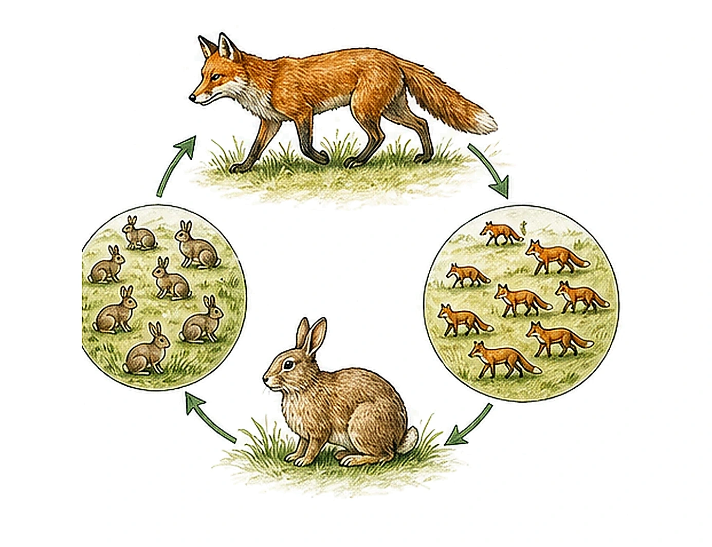
Thinking answer: fewer predators may first let prey increase, but too many prey can overuse food plants and habitat. Balanced predator-prey relationships can keep the whole community more stable.
Food Chains And Food Webs
A food chain describes how energy is transferred from one organism to another through feeding relationships.
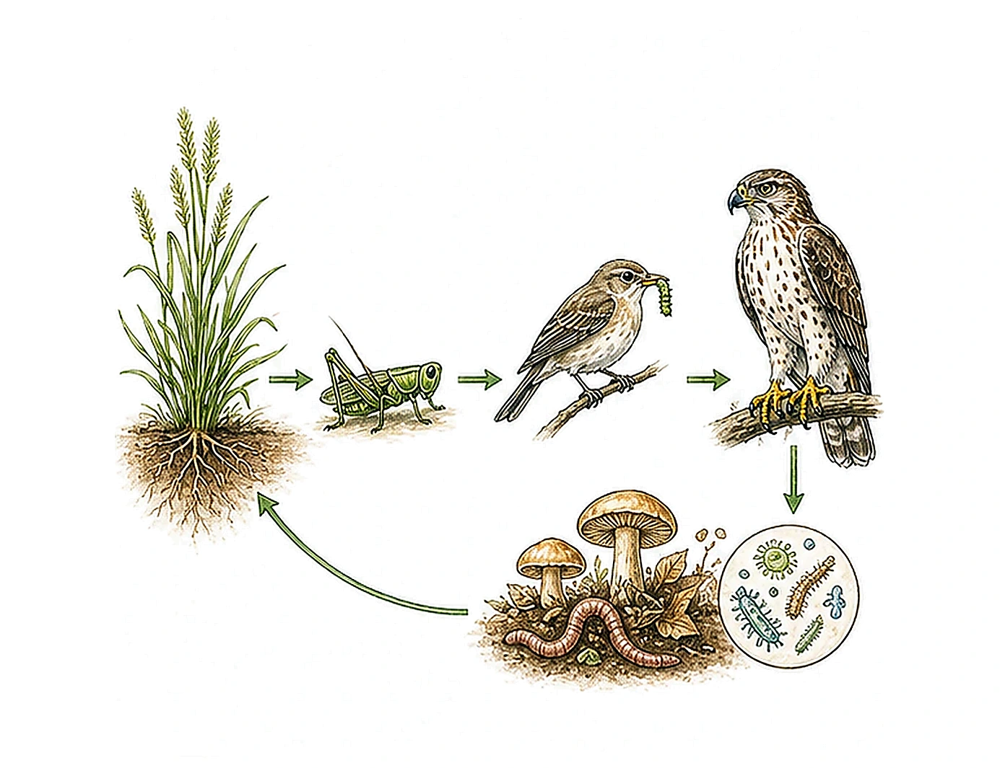
A food web shows the transfer of energy within a community. It consists of multiple food chains and shows more complex relationships between organisms. Organisms in a food web are interrelated, so a change in one population may influence several populations.
Quiz note: the scan asks how many food chains are in the food-web diagram with foxes, owls, birds, rabbits, mice, grasshoppers, carrots, grasses, and grains. The printed choices are 8, 9, 10, and 11. When counting, start with a producer and follow each arrow path to a top consumer; different diagrams can count slightly differently depending on which arrows are visible.
Trophic Levels And Pyramids
Each stage in a food chain, such as producer, primary consumer, secondary consumer, and tertiary consumer, is called a trophic level.
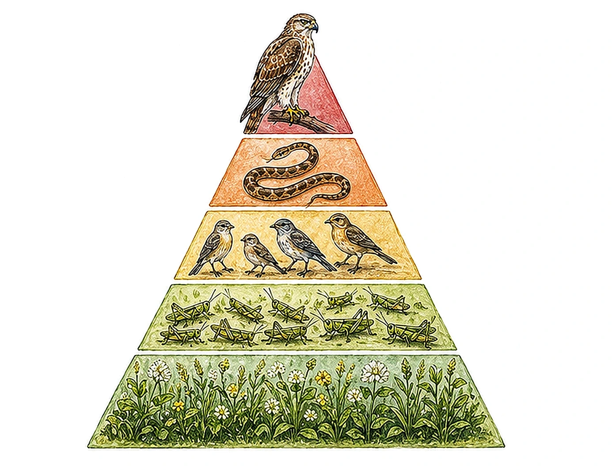
The energy stored in organisms' bodies can be transferred through feeding relationships. However, about 90% of the energy is lost during transfer as heat or undigested matter.
The source diagram gives a helpful scale: 1,000,000 J of sunlight, 10,000 J in producers, 1,000 J in primary consumers, 100 J in secondary consumers, and 10 J in tertiary consumers.
Thinking answer: energy transfer between trophic levels is not efficient. This is why food chains usually have only a few levels.
Pyramid Of Numbers
Trophic levels can also be represented by a pyramid of numbers. In a balanced ecosystem, there are usually fewer consumers than producers because energy is lost during transfer between trophic levels.
Many producers support fewer primary consumers, fewer secondary consumers, and very few tertiary consumers.
If one large producer, such as an oak tree, supports many insects and birds, the producer level can look smaller than the consumer level.
Parasitic food chains can look unusual, such as grass, rabbit, flea.
Nutrient Cycling And The Carbon Cycle
Carbon, oxygen, nitrogen, and water are essential nutrients for life. In natural ecosystems, these nutrients are released back into the soil when organisms die. Decomposers break down dead organisms so the materials can return to the physical environment and be used again by green plants.
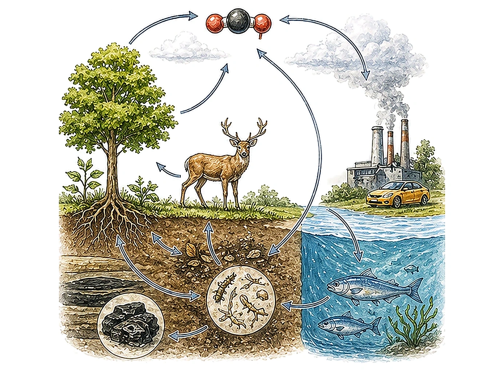
The scan asks about carbon sequestration. Carbon sequestration means storing carbon away from the atmosphere, for example in forests, soils, oceans, or geological stores.
Overview Of Human Impact
Human activity can damage ecosystems, but it can also protect and restore them. The source divides human impact into negative and positive impacts.
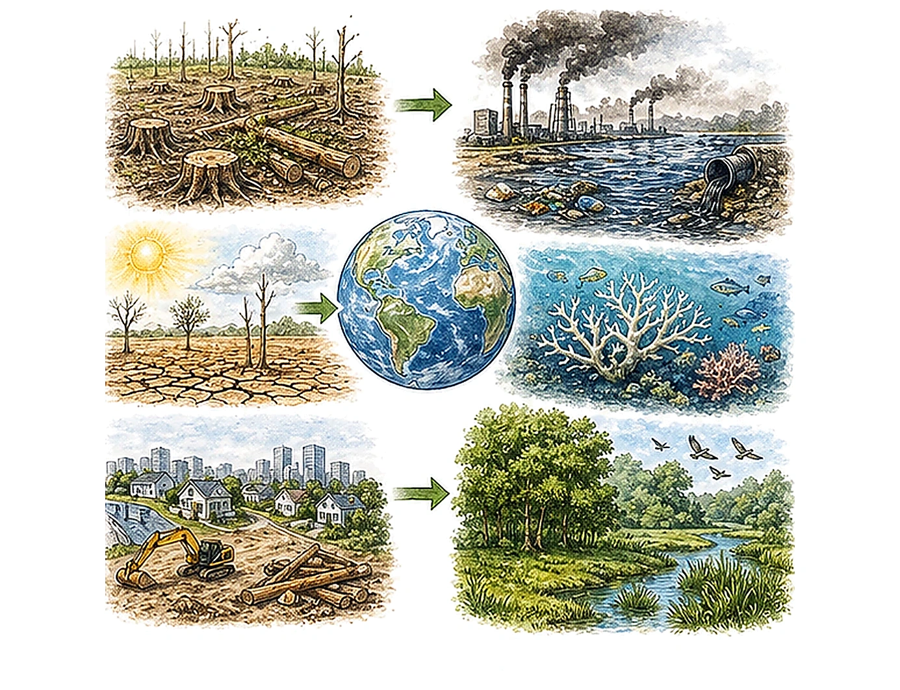
Negative Impacts: Deforestation, Pollution, And Sewage
Deforestation
Heat is trapped by greenhouse gases, causing temperature increase.
Soil is more easily washed away without trees that hold soil and take up rainwater.
Damage to the ecosystem may influence the survival of many species of plants and animals.
Pollution
Air pollution may cause smog and acid rain.
When garbage is dumped in large areas, chemicals can seep into the soil.
Sewage And Eutrophication
Water-carried waste matter from homes or industries is called sewage. Untreated sewage should not be discharged into rivers or lakes because it may contain disease-causing organisms.
Untreated sewage contains phosphates and nitrates. These nutrients feed algae and water plants, promoting excessive growth and leading to eutrophication.
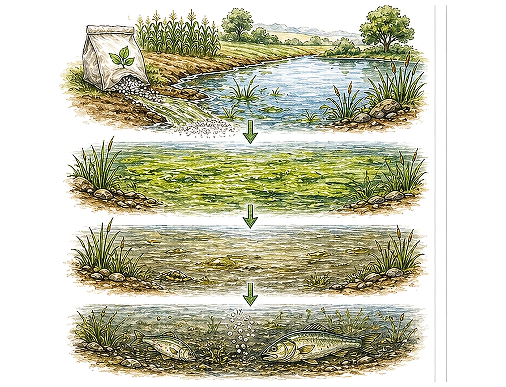
Sewage Treatment
Sewage is normally decomposed by microorganisms. In cities, sewage is treated in water reclamation plants.
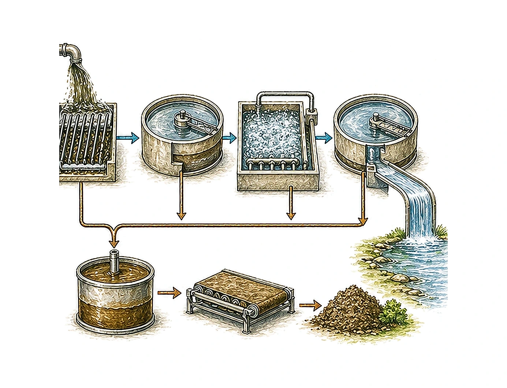
Video reference printed in the scan: NEWater, A Singapore Success Story.
Inorganic Wastes, Insecticides, And Biomagnification
Some industries dump large amounts of inorganic waste products into water bodies. These wastes may contain poisonous heavy metals such as mercury, lead, arsenic, and cadmium.
Insecticides are substances used to kill insects. The scan uses DDT as an example: DDT is non-biodegradable and is passed along food chains, increasing in concentration in organisms at higher trophic levels. This is called bioamplification or biomagnification.
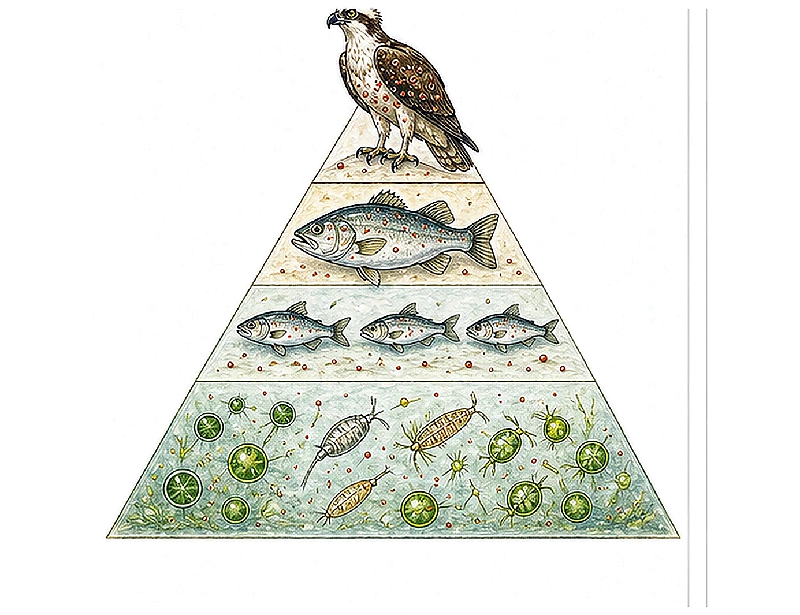
Why it matters: top predators can receive the highest pollutant dose even if the water concentration is tiny, because each predator eats many contaminated prey over time.
Positive Impacts On The Environment
Humans can reduce damage and restore ecosystems. The scan lists three major positive categories.
Major methods include planting fast-growing trees and connecting forests.
Can be done by protecting where animals live and using scientific research.
Major ways of reducing pollution and controlling waste.
Recycling Aluminium
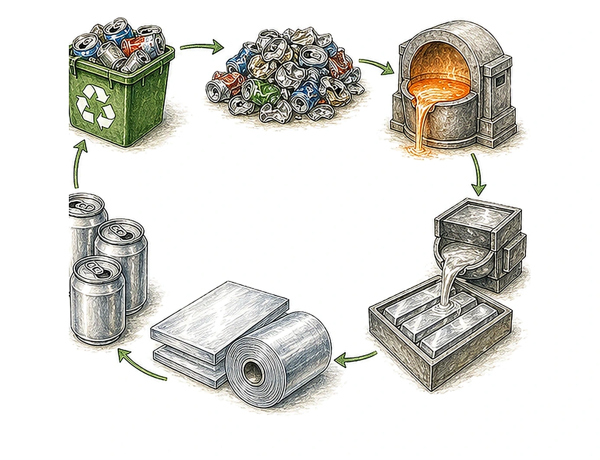
Wrap Up
The source closes with three revision prompts.
Video Links Printed In The Scan
- Coral reefs, carbon sequestration, air pollution, NEWater, and related ecology/environment references were printed in the source scan.
Rebuilt from the Week 07 scanned PDF, IMG_20260427_0007.pdf. Diagrams are newly drawn in HTML/SVG for readability, and unrelated handwritten marginal notes were not treated as lesson content.